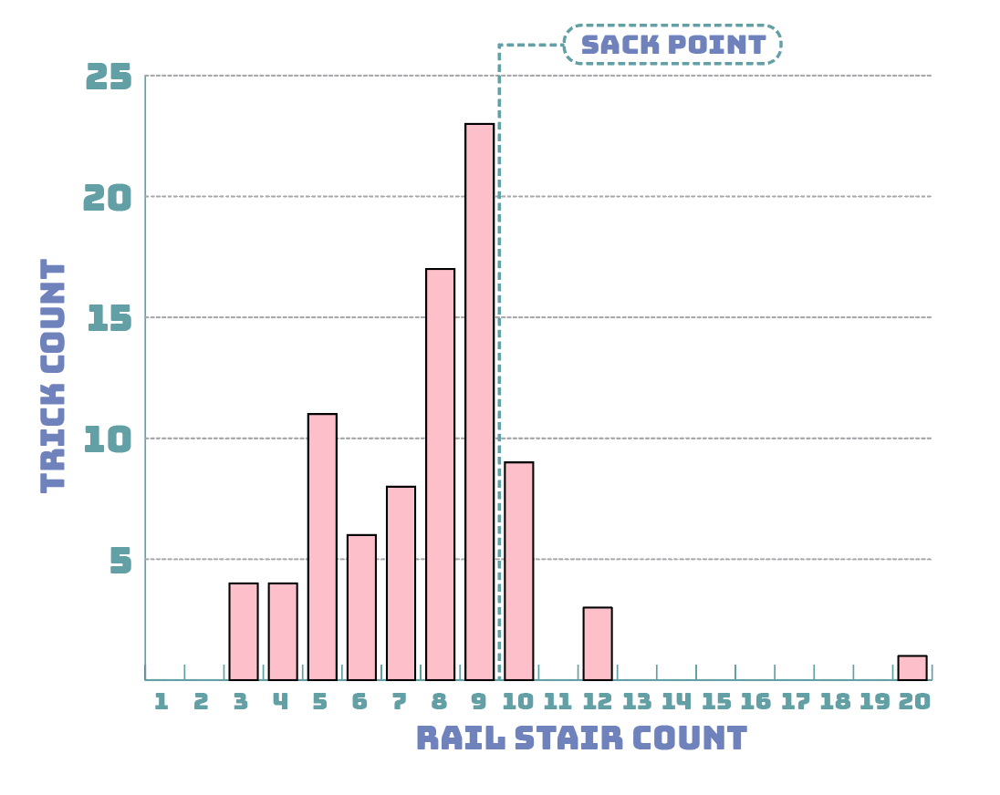

4PLY MAG
February 2021
Pat
Gallaher

By Harrison Lisewski
I'd happily give $100 to anyone that can tell me what is actually good with Pat G. My best guess would have to be some kind of ratatouille type situation but I'm sure anything else would be just as impressive. Fortunately I've found the perfect opportunity to pick his brain through this 'interview' for this 'magazine' that I 'work for'. We've also analyzed 15 years of Pat G footage to see if that could help. It hasn't, but I'm sure you'll all enjoy seeing his entire skate career compressed into a couple of little charts on your iPhone anyway.
Yoooooo!
Whats up Patrick?
Whats up bro, how you doin’?
Pretty good, how are you doin’?
Pretty good! Just cheeellin.
So I logged all your tricks in all your parts and I have all these stats. I even logged your jazz pushes when your IG was still @jazzpush ahaha.
I don’t think I have any, do I?
There was one in 'This Door is a Bucket'.
Oh what?
I thought there was going to be so many but you’re just a big fat poser.
Yeah I am a big poser ahaha. Im kinda not though because when I first stepped on a skateboard that’s how I pushed.
Damn really?
Yeah so I'm really backing my roots. I would strictly push like that, that's like how I pushed.
Ok that's sick. I take it back you’re not a poser.
It's funny that I don’t do more naturally though since I started pushing like that.
I have all these other stats too like what tricks you’ve done the most. I'm sure you could guess pretty easily what they are.
Yeah I don’t know. I read the Andrew Allen interview today and he was like right about the ollie but the switch crook was super far down.
I think ollie is almost always going to be the top trick with people going up curbs and stuff. Your top trick is ollie ahaha. But after ollie what do you think your top tricks are?
I feel like it could be switch crook or switch tre randomly.
Yup. Switch crook then switch tre ahaha.
Top Tricks
What's good with all the pinch tricks?
My friend Neil actually invented that and he taught me how to do it. There are other people that do it but he had never seen anyone else do it so he kinda like invented it on his own in a way. He also does the shuvits.
Ohhhh what?
He does it down a 7 stair and then down a double 3. So he’s like my influence, and when I first started doing them I would do the shuvs too but now that I started kinda doing the straight pinch a lot more.. The straight pinch is just really funny. It’s a funny trick.

Did he name it the pinch?
Yeah that’s what he called it when he invented it. “Invented it” you know. Nick Garcia does it and I'm sure it’s been done like so long ago.
You have 9 pinch tricks ahaha. Lots of pinch variations. Also lots of kickflips but not a lot of heelflips.
I think I might have a lot of switch back 180s too.
Yeah it's up there, you've only got 1 regular back 180 though
Woaaahh. I would've guessed that I have 0.
Ohhh! I just remembered I back 180'd something with Mitch [Guth]. That was so random that I even did that.
Do you remember what it was on?
It was like a bump to grass gap type scenario. It was so random. We made a kicker out of this weird sign.
Why don't you do back 180s?
I do 'em! But I can pretty much switch back 180 anything that I can back 180 normally. I probably wouldn't switch back 180 anything bigger than a 9 though.
That's funny. You skate so many 9's.
Yeah a 9 stair you can clear the sack point.
But you can't on a 10?
Yeah ahaha actually a 10 or 11 you kinda can but not all of them.

So you've got one 20 stair.
Yeah ahaha. The old El Toro.
How did that end up happening?
We went for Cody Davis to do it because he was friends with my lil brother growing up and I was like on a trip with my brother and him to California. We went for him but I was trying to be a good rail skater at the time so I did it.
But you’re not hyped on it?
Nope ahaha. It's not like it wasnt ABD or anything. It’s not my trick I don't think. I can’t own it or take the same pride in it that I can in like other tricks that I can own more. El Toro is just like a buzz word and it’s like a stuntman spot.
You are kind of a stuntman.
I mean skating is like a combination of art and stunts. So like yeah you kinda have to be to be a skater, unless you want to just not skate gaps at all. That’s the thing about skating. You choose your own course, and I don’t wanna be known for choosing like a more stunt course.
For sure I feel that. Would you say it’s easier to boardslide El Toro than to do other stuff that might not look as crazy?
Probably not, it was pretty hard.

Did it take many tries? Looks kinda make or break.
It took me a long time. I would like always make it down like 10 stairs and then just jump ahaha. I never screwed up getting into it luckily. But yeah back to your original question.. I think anything harder to boardslide would look cooler. There might be some odd exceptions but as a general rule I would guess that everything harder probably looks harder. It's like weirdly hard.
So is there anything in particular you wanna know?
Oh I was gonna ask how many switch 50's
9 backside, 7 frontside.
Nice!
32 switch crook variations ahaha
You should make the switch crook over time thing, I bet that goes down a bunch.
Not really ahaha. You just haven't done any in a couple years.
Filmers wont let me switch crook anything anymore because they’ve already filmed me switch crook like an 11 stair, so if I want to switch crook a 7 stair now they won’t let me ahaha.
I honestly thought there would've been more mannys.
I think if you look at the time thing with mannys it probably goes up while handrails go down. I think its changed like a bunch, like I cant skate handrails now. Mannys I only got into kinda recently. The percentage of a part that’s switch would probably go down a lot too. I think I skate more regular now.
What’s the secret to being a switch god? So many people have asked.
Haha I think maybe just like wanting to be good at switch and like, practicing ahaha. I think when I was little I would do things around the house left handed, and I thought that would help with switch. Maybe it did in the end I guess, I don't really know. More than anything I think just skating switch a lot makes you better at it.
Your switch skating has kinda dropped off a bit in the last few years though, did something happen?
Ohh I pulled my calf muscle around like 2015 or something and it’s good now but I can feel it starting to hurt if I skate too much switch and nollie. Certain switch/nollie tricks are safer than others. Too many high nollies, like nollie crooks, aren’t fine anymore really. If I do too many I can feel my calf starting to get sore and I'm kinda afraid of pulling it again.
PAT G OVER TIME
Pat was right. Mannys go up while handrail skating goes down. You can see the calf injury in the switch chart too assuming his switch footage in 2016 (Insano & Dr. Scarecrow) was filmed before the injury. It's a little devastating to see his switch crooks go from an all time high to 0% but I think he's switch crooked everything he needed to switch crook. Maybe it's time to move on.
Is there anything in particular you wanna know like datawise?
I think I wanted to know if I skate handrails regular or switch more.
You've done 29 switch handrail tricks and 49 regular handrail tricks.
Woah that's surprising.
You thought you skated more handrails switch?
I thought it’d be pretty equal. I feel like I dont film regular handrail tricks too much.
So you’ve done 201 switch tricks which is like 38% of your skating.
Woah that’s surprising too. I thought it’d be closer to 50%. I’m also wondering how many switch tres total. I feel like I’ve used it as a flatground trick a lot.
16 switch tres, 9 were on flat. But fakie flip is your top flatground trick.
Yeah I kinda realized recently that I was doing that a lot. I need to cool it down.
Do you think after seeing what tricks you do the most you’ll start skating differently?
Yeah if it comes to my attention that I’m like overdoing something I’ll definitely consciously try not to do it.
That's interesting. I wonder if Andrew Allen is sitting at home right now thinking about cooling it on back bigs. I hope not ahaha.
Frog
"I'd kiss a frog even if there was no promise of a Prince Charming popping out of it. I love frogs." - Cameron Diaz
Has being on Frog changed the way you skate at all?
Yeah, going to New York and skating with Chris and Jesse definitely changed the way I skate. Theyre always going to like crazy spots and doing tricks that are like made for the spot. In Minnesota I would just pick more normal tricks at normal spots that are like conventional. I still personally want to be more conventional and I think I am, but its definitely like skating with them forces me to at least try to be a little less conventional, but its pretty hard for me.
Best thing about being on Frog?
Probably just like skating with my friends and having an excuse to go on trips with them. I like skating with everyone, thats probably my favourite thing for sure. I don’t know how much its really about how good you are, you definitely don’t have to skate 20 stairs. Maybe it's just about being homies I don’t know. Chris puts on some skaters that he personally is a fan of rather than just the objectively best skater, which is sick actually.
Do you know when the next Frog video is coming out?
I think relatively soon but I dont know how soon.
Frankie's almost done with a part and same with like Nick but it's going to be a thing with just them. I dont think anyone has parts besides Frankie and Nick. Maybe [Redacted]. Maybe it’ll be like [Redacted]'s intro part.
Is it supposed to be a secret [Redacted] is on Frog now?
Yeah Probably hahaha.
I can't publicly spill any beans but $5 is $5.. DM me.
Video Numbers
- 527 - Tricks logged for this article
- 225 - Unique tricks (42.6%)
- 163 - Tricks done in/out of banks (31%)
- 9 - 'Pinch' tricks
- 22 - Tricks down stairs
- 79 - Flatground tricks
- 163 - Ledge tricks
- 1 - Plane flown

- 95 - Unique ledge tricks (58% of all ledge tricks)
- 24 - Transition tricks
- 1 - Jazz push
- 1 - Trick on a turtle
- 1 - Trick on a frog
- 107 - Kickflip tricks
- 15 - Heelflip tricks
- 23 - Bank to ledge tricks (21.5% of all ledge tricks)
- 0 - Kisses from Cameron Diaz (yet)
- 39 - Slow mo tricks
So someone wanted me to also ask you about opening pickle jars?
Thank you for reading and you're welcome. If you'd like to know anything else about Pat or anybody else, message us on the 4PLY Instagram and we'll see what we can do. Please follow us, I think if we get enough followers we can finally start making enough money to buy a private island and build the skatopia that we all deserve. Maybe even an air fryer, who knows?
Video Breakdown
Ohh ahaha dude it's hard. It's really hard.
You can't do it?
My wrists are really weak. They're really flimsy. Me and Jesse Kruger tried to open one one time and we couldn't do it.
Damn Jesse can't open pickle jars either?
No I think he can! We just had a really tough jar one time ahaha but I feel like that happens to me fairly often where I cant open it and I’ll like ask my dad to open it for me.
Wings or pizza?
Uhhhh pizza.
Easy.
It was kinda hard but I think probably pizza.
I wanted to look at like, AZ vs MN vs Cali etc. Where do you think you skate better?
Ohh Minnesota without a doubt.
Why's that?
The spots and like, if you get hurt you can go home I guess. I don't know ahahaha. Like a lot of the time it takes me a really long time to work up the courage for something and if it’s a spot I look at all the time I'm more likely to like find its final form. I think I have the same thing with Jonathan [Pierce] where I’ll skate the same spots and like one up myself or something. To a less extreme degree. So like that south 9 handrail or whatever I’ll never like do anything as good on a rail not at home as I have on that rail probably.
Is that the one you switch back tailed?
Yeah, I’ll never like, I don’t know, probably get as comfortable with another handrail again.

That does look like a comfy rail.
Similar things will be happening all the time with like, raw spots or spots that have something wrong with them. Just skating them over time you get used to them. Also just like working with people, I get really comfortable working with the homies back home, like filming with Chris Burt I can just like get comfortable saying what I wanna do and stuff. Being not at home you just aren't as comfortable.
I guess it’s probably nice skating where it’s cold and you can wear like a hoodie and jeans or something too.
It gives me more energy, I get more tired when it's hot. Winter in Arizona and LA are like perfect too. They have really good spots too, I feel pretty comfortable there. I dont think it's a huge factor. I would say like, it’s still a pretty tough question like pizza and wings. They’re both pretty good.
What happened to your old Instagram?
Ohhh dude it was when we were facetiming! Remember? I had to join the group chat on @questforcuteness like in the middle of it. I wanted to do that thing where you put the media in like… this:
Woahhh I didn’t know you could do that.
Yeah, you can put photos in remember? We were like doin’ it and it said I needed to update instagram and then when it was updated it asked me for my birthday and I was in a rush to get to the chat so I just pressed like the first thing and I guess I said I was 0 years old because the first thing was like November 2020. And then they kicked me out of my account because you’re supposed to be 13 to have Instagram.
Ahahahahahaha no way.
I’m locked out because they think im like 0.
Brooooo ahaha that sucks. So you just had to make a new IG?
Yeah well I like, appealed it and wrote my real birthday and stuff but they just haven’t seen that I appealed it yet maybe? I got a message saying they can’t review it right now because they don’t have enough staff or something.
Ahaha fuck.
Stupid.
Anything you wanted to say before you go?
Shouts out to Matt Springer, shouts out Hayden Burns, shouts out Meathog and all the homies! Thank you to all my friends and family for being there and everything and thank you to Diego for doing Quest for Cuteness with me originally and to PogiBoi and Jon and Moody more recently for helping out as well. And thank you to Chris and everyone on Frog for being the best homies to skate with.